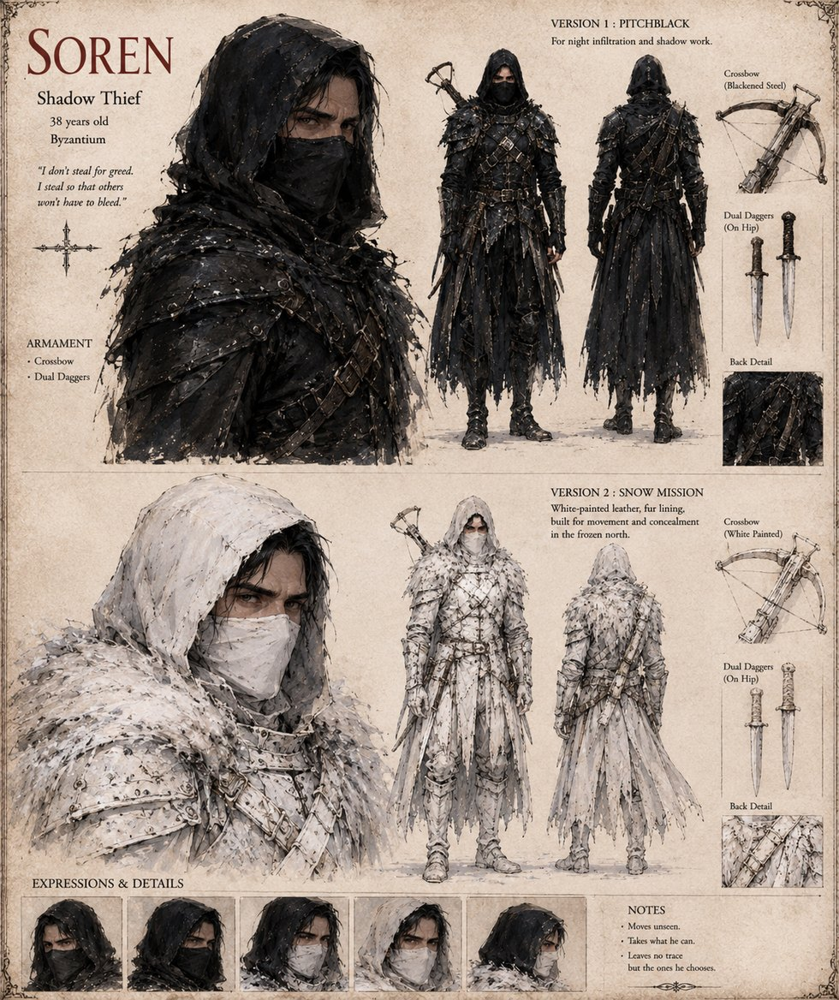

Soren
Shadow thief · 38 years old · of Byzantium
A thief claimed by no guild, who works for men rich enough that hiring him is safer than wondering who else might. Duke Vane pays him more than he has ever been offered for an object he hasn't seen. Soren works his way into the coalition's country through the worst blizzard of the winter, lifts the vessel from the war-altar in the deepest hour of the worst night, when the sentries have been pulled back to shelter, opens its lock with a length of wire that has never once dulled or snapped, and is three miles gone before anyone thinks to check. Two days south, in a hunter's cabin, he pries off the silver and finds an empty, dented steel flask smelling of long-dried soup. He delivers it to Vane without a word and leaves Sumne within the month — the last man alive who ever looked beneath the silver, and a man who never says so.
“I don't steal for greed. I steal so that others won't have to bleed.”
Appears in The Thermal Vessel War